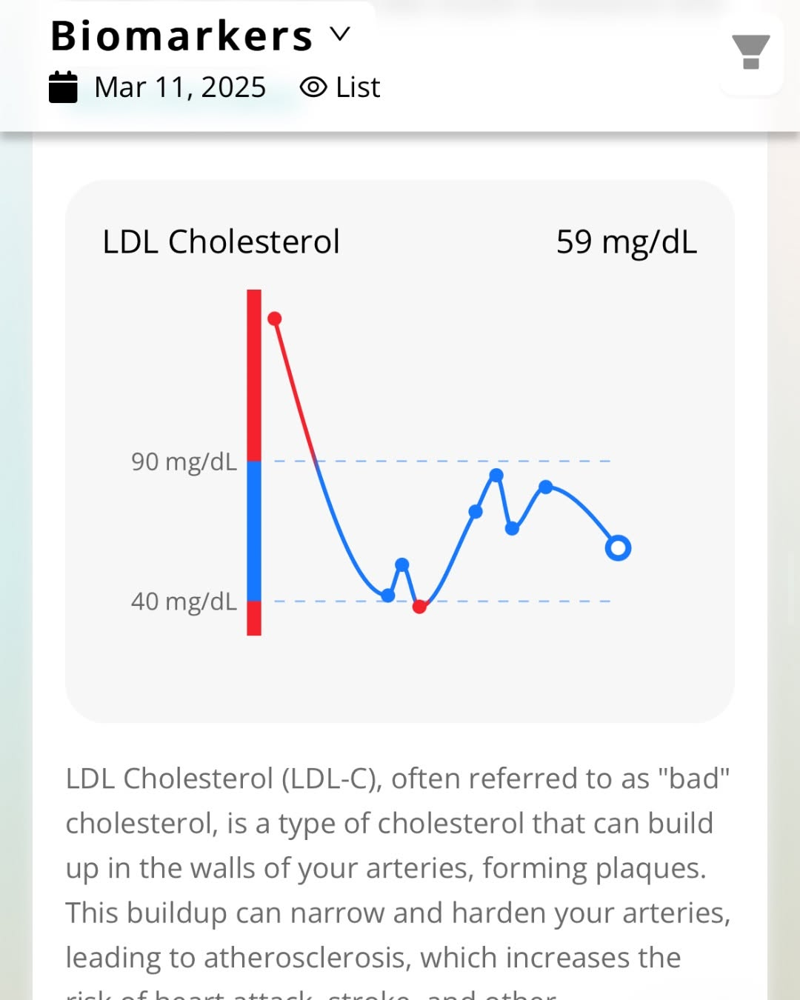
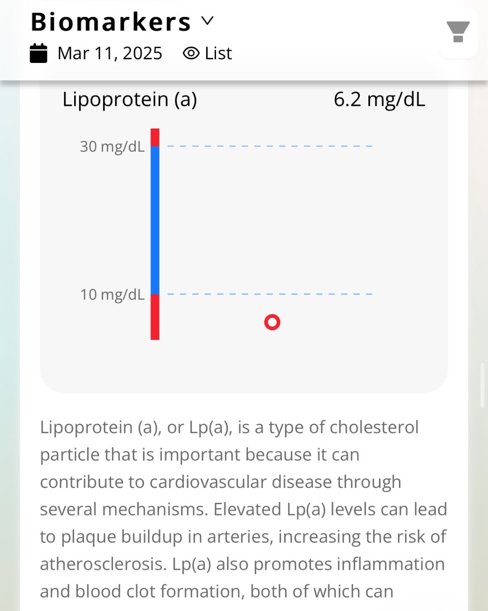
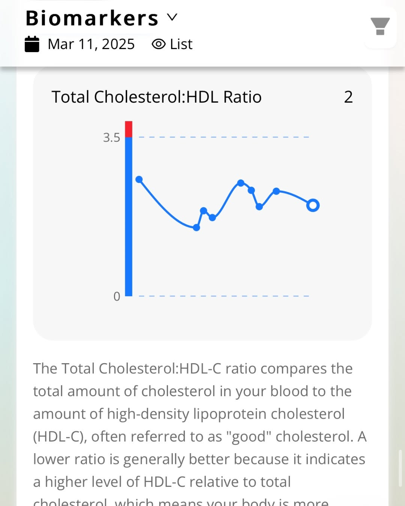
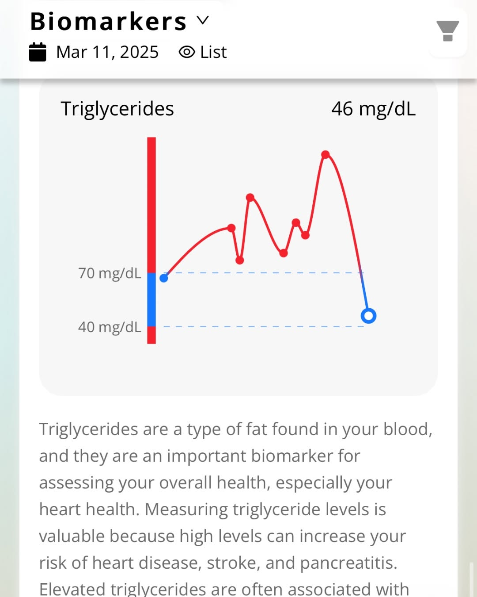

Another well-known low-carb influencer coming to terms with heart disease risk.
Two years ago, my lipid panel was “lit up like a Christmas tree”, with elevated ApoB and lpA, along with extremely high LDL cholesterol and plaque accumulation as indicated by a CT angiography. 📈
Fast forward to today, and here’s my latest set of results from an at-home blood test sent to me by @SiPhoxHealth.
While my numbers are not “perfect”, they are much more stabilized than they used to be, and I am now far less concerned, especially based on my family’s history of cardiovascular disease.
So what exactly did I do? ❤️🩹
🥑 I dialed back saturated fat. I used to be the guy who would eat the most marbled pieces of steak and eat the fatty ends off of all my pork chops. Now, only about 10% of my total fat intake is saturated and the rest are Mediterranean fats, such as extra-virgin olive oil, salmon and avocados.
💻 I researched every last natural heart health compound and supplement for stabilizing lipid values and improving cardiovascular health, then worked with @Vitaboom.Health to create a heart health pack that I take every day. You can see the full ingredient list and how it works by clicking this link: Vitaboom - Personalized Supplement Protocols (vitaboom.com). Use the code "BEN50" for 50% off your first month.
💉 I got on a twice monthly injection of a PCSK-9 inhibitor. Although I don’t have a screenshot here, it seems to completely put the brakes on plaque accumulation/progression.
The rationale behind my protocol was developed based on multiple podcasts I’ve done in the past several years on managing heart health. 🎙️
See these resources as great starting points into your heart health journey: Heart, Home, and Hormesis: The First Steps to Optimal Health (Ben Greenfield Life - Health, Diet, Fitness, Family & Faith)
 Ben Greenfield Life - Health, Diet, Fitness, Family & FaithHeart Disease & Health Hacks with Dr. Stephen Hussy: Part 1Ben Greenfield talks with Dr. Stephen Hussey about the history of heart disease, understanding heart health, and other little-known heart health "hacks."bengreenfieldlife.com
Ben Greenfield Life - Health, Diet, Fitness, Family & FaithHeart Disease & Health Hacks with Dr. Stephen Hussy: Part 1Ben Greenfield talks with Dr. Stephen Hussey about the history of heart disease, understanding heart health, and other little-known heart health "hacks."bengreenfieldlife.com
In a perfect world, I would actually like for my cholesterol to be slightly higher, but I’m very happy that I’ve now created a scenario where plaque accumulation and heart disease risk is lower. I don’t know about you, but experiencing the dreaded “Widowmaker“ is not high on my list of priorities. 🙏
Click this link to try out your own SiPhox home blood test and don't forget to use code "BEN" for 20% off: SiPhox Health: Blood Testing That Tells You What To Do Next (SiPhox Health)
I have a great podcast episode for you to listen to with the CEO of SiPhox Health, Michael Dubrovsky, too: At-Home Blood Testing: SiPhox Health with Michael Dubrovsky (Ben Greenfield Life - Health, Diet, Fitness, Family & Faith)
#BenGreenfield #BenGreenfieldLife #BoundlessLife #Biohacking #Longevity #HeartHealth #LipidPanel #SiPhoxHealth #Vitaboom




